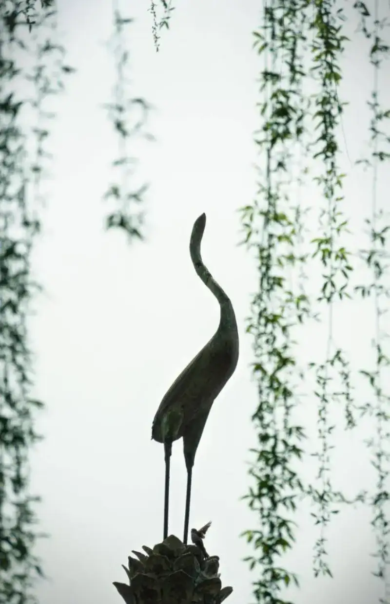

The jade array dresses a tall tree,
Ten thousand green ribbons hang down.
I do not know who cut the fine leaves,
The spring breeze of February is like scissors.
The willows are green. The old poets used verse to express the poetry of spring. How do we use the camera to express that mood?
How to approach shooting weeping willows
First be clear about what you want to shoot. Do you shoot a detail or a wide scene? Do you place the willow at the edge, or let it fill the whole frame?
What you shoot decides how you place the willow. Only then do you look for formal beauty and a point of interest in the frame.
Keep the frame simple, and make the subject stand out
First look at a wide scene that many people shoot. The view looks beautiful, but the composition is messy. The frame has too many elements, no focus, and it feels cluttered.
Whether you shoot a willow or anything else, the background must be simple and the subject must stand out.
Pair it with old architecture
With willows gently swaying, pavilions, towers, green-tiled eaves, and long embankments, shooting willows often goes with old architecture. It enriches the frame and adds more mood.
You can try a diagonal composition. Put the red flowers and green willow in the foreground, and the old architecture in the background.
You can also use a symmetrical layout, with willows hanging on both sides. It has its own charm.

Look with care, and even in a reflection you can find the poetry of willows and old buildings.
Look for formal beauty
Weeping willows make the finest lines. As you shoot, find the relations of point, line, and plane, and the contrast of large and small, solid and empty. Then your frame is full of formal beauty, and it leaves a feeling that words cannot fully say.
Look for a point of interest
If a frame has only still elements such as willows, it feels a bit flat. But when a bird flies in, it quickly catches the eye. With motion joined to stillness, that bird is the point of interest.
Besides a bird, the point of interest can be a person, a boat, or any animal. With different backgrounds, times, and weather, you get different moods.

In this season full of spring, take these tips and go out and shoot.